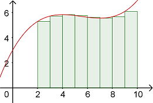

On this page, you will learn to:
- Set up and evaluate double integrals over rectangular regions using Riemann Sums and Iterated Integrals.
Recall back in Calc 1 that we used Riemann Sums to approximate the area under a curve. We did this by computing the area of rectangles with heights based where the rectangle touched the given function on the left, right, and midpoint.

Now that we are in 3D space, we can use a similar idea to approximate the volume under a surface. The following GeoGebra applet will help illustrate how we can approximate the volume below a function \(f(x,y)\) over a rectangular region in the \(xy\)-plane.You may also click-and-drag to rotate the view around the origin.
- Consider the surface given by \(z = f(x,y)\) and the rectangular region \([0,4]×[0,3]\) in the \(xy\)-plane. The rectangular region is divided into smaller sub-rectangles of with \(Δx = 1\) and \(Δy = 1\).
- The volume of each rectangular box (for \(k = 0\) to \(11\)) can be determined by any of its four corners or the midpoint of the sub-rectangle. For illustration, compare the boxes using the Lower Left corner, Upper Right corner, or Midpoint. The volume of each box will be \(f(x, y) ΔxΔy = f(x, y) ΔA\), which is the area of the base rectangle times the height of the box determine by the function value.
- The total volume can be approximated by the sum of all the boxes, or \(V ≈ \ \sum f(x,y) ΔA\).
For a function \(z = f(x, y)\) defined over a rectangular region \(R\) in the \(xy\)-plane that is divided into \(m\) sub-rectangles along the \(x\)-axis by \(n\) sub-rectangles along the \(y\)-axis, the volume bounded under \(f\) over \(R\) can be approximated by the equation below.
\[V \approx \sum\limits_{i=1}^{m}{\sum\limits_{j=1}^{n}{f\left({{x}_{i}},{{y}_{i}} \right)\Delta A_{ij}}}\]The base area of each sub-rectangle is represented by \(\Delta A_{ij}\) and the height of the function above each sub-rectangle is \(f(x_i, y_j)\). Thus \(f(x_i,y_i) \Delta A_{ij}\) is the volume of each 3-dimensional box. The double sum adds up all boxes in the \(x\) direction and \(y\) direction for a total of \(m \cdot n\) sub-rectangles. The double sum is an iterated, or nested, summation, meaning we add up the boxes in a row from \(j = 1\) to \(j = n\) and then move to the next row for each \(i\) value as it goes from \(i = 1\) to \(i = m\).
Iterated Double Integrals
In order to go from the approximate volume to the exact volume, we can decrease the size of each sub-rectangle which increase the number of sub-rectangles - the more rectangles, the better the approximation - until we get infinitely many and the approximation becomeds exact.
For a function \(z = f(x, y)\) defined over a rectangular region \(R\) in the \(xy\)-plane that is divided into \(m\) sub-rectangles along the \(x\)-axis by \(n\) sub-rectangles along the \(y\)-axis, the volume bounded under \(f\) over \(R\) can be computed exactly by the equation below.
\[V = \lim_{m, \, n \to \infty}{\sum\limits_{i=1}^{m}{\sum\limits_{j=1}^{n}{f\left({{x}_{i}},{{y}_{i}} \right)\Delta A_{ij}}}}\]If we choose the sub-rectangles to have a uniform size, then \(\Delta A = \Delta x \Delta y\) where \(\Delta x\) is the width of the sub-rectanagles in the \(x\) direction and \(\Delta y\) is the width of the sub-rectangles in the \(y\) direction.
The following GeoGebra applet will help illustrate how we can compute the volume below a function \(f(x,y)\) over a rectangular region in the \(xy\)-plane. You may also click-and-drag to rotate the view around the origin.
- Consider the brown solid below, which is bounded below \(f(x,y)\) over the rectangular region \([0,4]×[0,3]\) in the \(xy\)-plane.
- Uncheck the Show f(x, y) and Show Solid boxes. Then select the dydx box. We can find the area of the pink region by integrating \(f(x,y)\) with respect to \(y\) from \(y=0\) to \(y=3\). Just like with partial derivatives, treat \(x\) as a constant when evaluating the antiderivative. The result will be a function of only \(x\)'s, so no more \(y\)'s. We then have to integrate this function with respect to \(x\) from \(x=0\) to \(x=4\). You can use the yellow slider to move the pink region along the \(x\)-axis.
- Uncheck the dydx box and select the dxdy box. We can find the area of the green region by integrating \(f(x,y)\) with respect to \(x\) from \(x=0\) to \(x=4\). Just like with partial derivatives, treat \(y\) as a constant when evaluating the antiderivative. The result will be a function of only \(y\)'s, so no more \(x\)'s. We then have to integrate this function with respect to \(y\) from \(y=0\) to \(y=3\). You can use the yellow slider to move the pink region along the \(y\)-axis.
The result of the above illustration gives us the following.
A double integral is defined to be the value of the double Riemann sum, meaning it as an iterated, or nested, pair of definite integrals of the continuous function \(f\) over the rectangular region \(R = [a,b] \times [c,d] = \{ (x,y) \, \vert \, a \le x \le b, c \le y \le d \}\) in the \(xy\)-plane.
\[ \begin{aligned} \underset{R}{\mathop \iint}\, f(x,y) \, dA &= \lim_{m, \, n \to \infty}{\sum\limits_{i=1}^{m}{\sum\limits_{j=1}^{n}{f\left({{x}_{i}},{{y}_{i}} \right)\Delta A_{ij}}}} \\[4pt] &= \int_{a}^{b} \int_{c}^{d}\, f(x,y) \, dydx \\[4pt] &= \int_{c}^{d} \int_{a}^{b}\, f(x,y) \, dxdy \end{aligned} \]The order of the differentials, \(dydx\) and \(dxdy\), determines the order of integration. The inner integral is integrated first, so for example \(dxdy\) means we integrate first with respect to \(x\) and then with respect to \(y\). When integrating with respect to one variable, treat any other variables as constants just like when finding partial derivatives.
The following video will help explain what the two double integrals mean.
The next video works through several examples demonstrating how we can compute the double integral of a function of a rectangular region.
In addition to computing the volume of a solid, double integrals can compute the average value of a function \(f(x,y)\) over a region \(R\). Normally, we think of computing an average by adding up a set of numbers and the dividing by how many numbers were added together. Thus the average value of a function \(f(x,y)\) would be the sum of all values of \(f\) over \(R\) divided by the number of values of \(f\), which would equal the value of the area of \(R\).
The average value of the function \(f\) over the region \(R\) in the \(xy\)-plane is given by the formula below.
\[ \bar{f} = \frac{1}{A} \underset{R}{\mathop \iint}\, f(x,y) \, dA \]